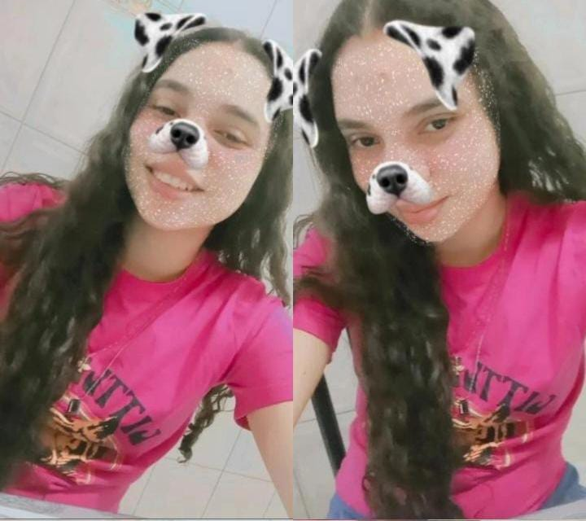

SOBRE YASMIN
Meu nome é Yasmin, tenho 17 anos e sou estudante do Instituto Federal Baiano, Campus Guanambi. Junto com minha amiga, decidimos criar este portfólio para compartilhar um pouco mais sobre nossas vidas e como nossas experiências impactam o mundo ao nosso redor.
Desde cedo, desenvolvi uma paixão pela literatura, especialmente por livros de investigação criminal e romances. A leitura me proporciona não apenas conhecimento, mas também novas perspectivas sobre o mundo. Além disso, estou em um processo constante de fortalecer minha conexão com Deus, algo que tem sido essencial em minha jornada pessoal.
Atualmente, dedico-me aos estudos, com foco na preparação para exames futuros. Meu maior objetivo é conquistar a aprovação em vestibulares e realizar meus sonhos, trilhando um caminho de crescimento pessoal e profissional.
Espero que aproveite a leitura e conheça um pouco mais sobre mim!
